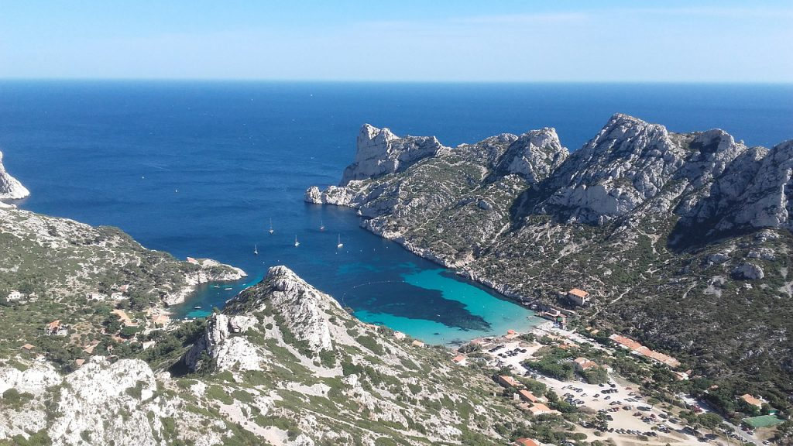
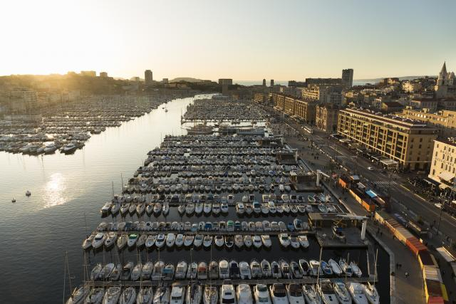
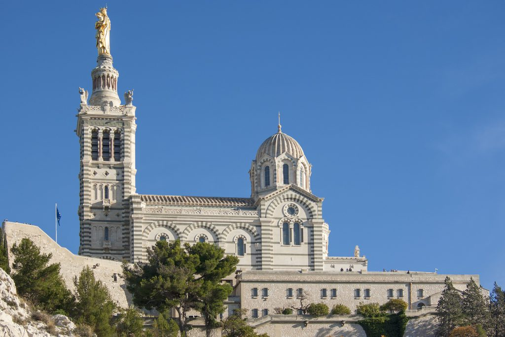

À proximité de Marseille, vous trouverez l’atmosphère tout simplement paradisiaque du parc national des Calanques. En effet, que vous cherchiez à admirer une biodiversité remarquable, des paysages à vous couper le souffre ou bien des plages immaculées idéales pour se baigner et se reposer tranquillement, les Calanques de Marseille ne vous décevront pas. La multitude d’archipels, d’îlots, de falaises calcaires et de sentiers de randonnée vous donnera l’impression de vous perdre dans la nature, loin de tout, et ce même alors que vous êtes à seulement quelques minutes d’une des grandes métropoles européennes.
Le Vieux-Port de Marseille est un des symboles mythiques de la ville et, par conséquent, un lieu incontournable à visiter. Autrefois, ce fut un des ports commerciaux les plus importants de l’Hexagone mais de nos jours, il est essentiellement utilisé par des bateaux de pêche typiques du coin. Vous apprécierez certainement de faire un tour sur le quai des Belges, où vous trouverez un des meilleurs marchés de poisson de la région. Qui plus est, le Vieux-Port est également le point de départ de nombreux ferrys touristiques qui vous feront découvrir les alentours splendides.
Situé sur le point culminant de la ville, sur un piton calcaire de plus de 140 mètres, ce chef-d’œuvre architectural s’impose comme le point de repère le plus important de la ville et, par conséquent, comme une de ses figures emblématiques. À l’instar de nombreuses autres églises, la basilique de Notre-Dame-de-la-Garde fut autrefois utilisée comme point d’observation. De nos jours, c’est surtout une des attractions touristiques centrales de la cité phocéenne. Nombreux sont ceux et celles qui s’y rendent avec intérêt et passion pour contempler son intérieur somptueux, les mosaïques magnifiques ou encore la statue monumentale de plus de 11 mètres de la Vierge à l’Enfant. Qui plus, si vous voulez juste admirer le panorama magique que vous offre le point culminant de Marseille, la terrasse de la basilique exaucera votre vœu, en vous proposant une vue imprenable sur la ville ainsi que sur la mer.
